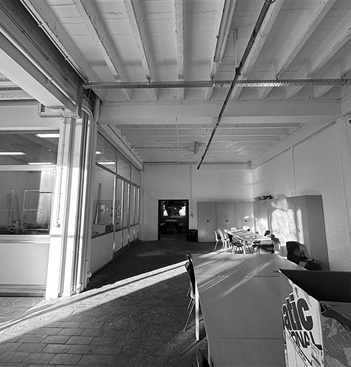
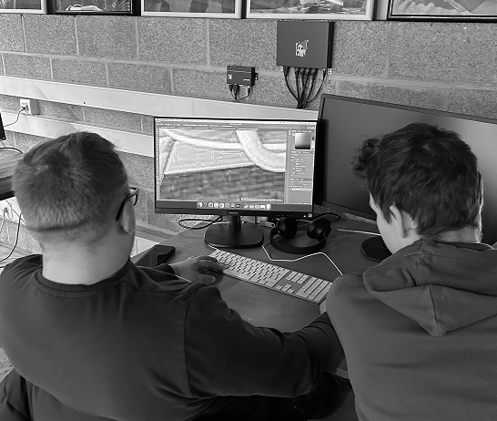
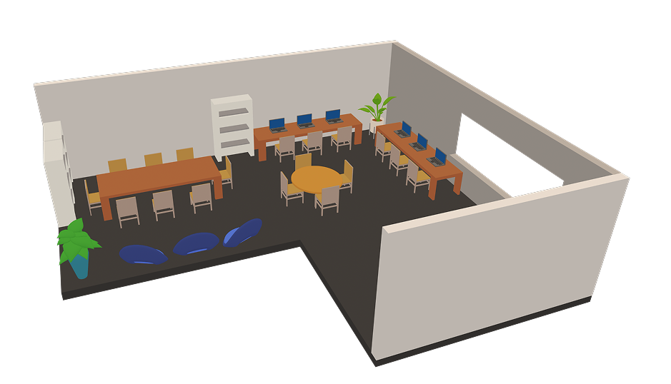

1. Contexte
Dans le cadre du projet «Rethinking-UX», nous avons dû repenser l’aménagement d'une salle de l'école, en fonction des envies des étudiants. Avant toute modification, dans cette salle, il n'y avait que quelques bancs et un grand espace vide, ce qui limitait son potentiel.
Le groupe a mené une enquête afin de comprendre les besoins réels des futurs utilisateurs, afin de concevoir des solutions adaptées qui favorisent un environnement plus ergonomique, collaboratif et stimulant. Grâce à une approche centrée sur l’utilisateur et une méthodologie itérative, nous avons exploré différentes pistes d’aménagement et mis en place des améliorations concrètes pour optimiser l’usage de cette salle.
2. Recherches et analyse
Le groupe a d'abord pensé aux questions à poser aux étudiants concernant l’utilisation future du local. Pour avancer plus efficacement dans le travail, nous avons décidé de nous répartir les tâches.
Une fois le questionnaire terminé, la décision a été prise de faire un premier tour dans l’école, de façon à recueillir les premiers témoignages d’étudiants. Le questionnaire a aussi été partagé en ligne via nos réseaux sociaux, afin de toucher le plus grand nombre de personnes possible.
Une fois la visite du lolcal effectuée , la réflexion a porté sur les améliorations à envisager pour le local. J'ai réalisé un premier plan sur papier de la situation du local, pour voir les aménagements possibles ou non.
Ensuite, le groupe a commencé à collecter et analyser les résultats du sondage. En parallèle, des membre du groupe ont commencé à faire un prototype de mise en place du mobilier dans le local (en retouchant les photos mises à disposition par les professeurs).
3. Mise en commun
Une mise en commun des résultats entre les groupes a permis de tirer des conclusions plus globales, pour aménager au mieux le local en fonction des besoins, non plus de 20 étudiants mais de 120. En effet, plus le groupe cible est vaste, plus les résultats sont représentatifs de leurs attentes.
4. Répartition des tâches
Afin de rendre notre travail plus efficace, il a été décidé avec les autres groupes de nous répartir l’espace du local. Notre groupe, a dû s'occuper de l’aménagement de la longueur de la salle. Il a aussi été décidé que tous les groupes resteront "en contact" tout au long du projet, pour conserver un style cohérent (notamment au niveau des couleurs du mobilier et des murs).
Dès que quelqu'un faisait ne photo du local, il la mettaiot à disposition pour les autres groupes. De notre côté, pour nous faire une idée du matériel à placer et de la manière dont nous allons le disposer, un membre du groupe a réalisé un modèle 3D de la salle (en utilisant Spline 3D). Cela nous a permis de tester rapidement différents designs et de mieux visualiser notre projet.
5. Quelques plans et photos modifiées
Différents plans en vue de dessus ont été réalisés sur Figma, en variant la disposition du mobilier. Ces plans ont ensuite été proposés au reste de la classe, ce qui a permis de recueillir des retours sur l’agencement jugé le plus cohérent en fonction de l’espace disponible. Le plan qui a finalement été retenu est visible plus bas.
Afin de nous projeter dans le futur, nous avons retouché les photos mises à disposition par les professeurs. Voici deux images retouchées.
6. Une étude de marché
Comme le groupe pensait utiliser du matériel que l'école n'avait pas (des poufs et des plantes), nous avions dû réliser une étude de marché. Il a été convenu de consulter les marchés du neuf et de l'occasion pour trouver le meilleur prix possible.
7. Le code
Une fois toutes ces étapes réalisées, chaque membre du groupe a dû réaliser son propre site, avec son propre style graphique (seul le contenu textuel a été réalisé en groupe). C'est cette partie qui a pris le plus de temps. En effet, il a fallu penser à la manière de présenter le contenu, afin de le rendre intéresssant pour le lecteur. Heureusement pour moi, je n'ai pas eu trop de difficultés lors du codage.
8. Problèmes rencontrés
Durant le projet, le groupe a dû faire face à plusieurs problématiques. En effet, le local était rempli de carton. Ceci a rendu difficile les observations du local (nombres de prises électriques, éclairage suffisant...), et a aussi demandé du travail supplémentaire pour retoucher les photos. Par ailleurs, le local était souvent fermé.
9. Conclusion
Ce projet a montré que la répartition des tâches (interne dans le groupe de 5 mais aussi avec les autres groupes) est un point primordial pour garantir une progression rapide et structurée. Les mises en commun avec les autres groupes sont aussi importantes car elles permettent de voir si tout le monde a bien la même compréhension des besoins des étudiants. Enfin, il est important de toujours garder en tête les besoins du "client" et d'anticiper le budget nécessaire à la réalisation du projet.